Cars, trucks and pickups shaped from solid hardwood, sanded smooth and finished non-toxic — the kind of toy that survives a childhood and gets handed to the next one. Made in the same shop as the furniture, on the same principle: built to last, not to land in a landfill.
No plastic, no batteries, no small parts to lose — just chunky wheels that really roll and a shape a small hand can grip. Some go out to craft fairs, some are one-off gifts. Want one in a particular wood, or a whole fleet? Get in touch.
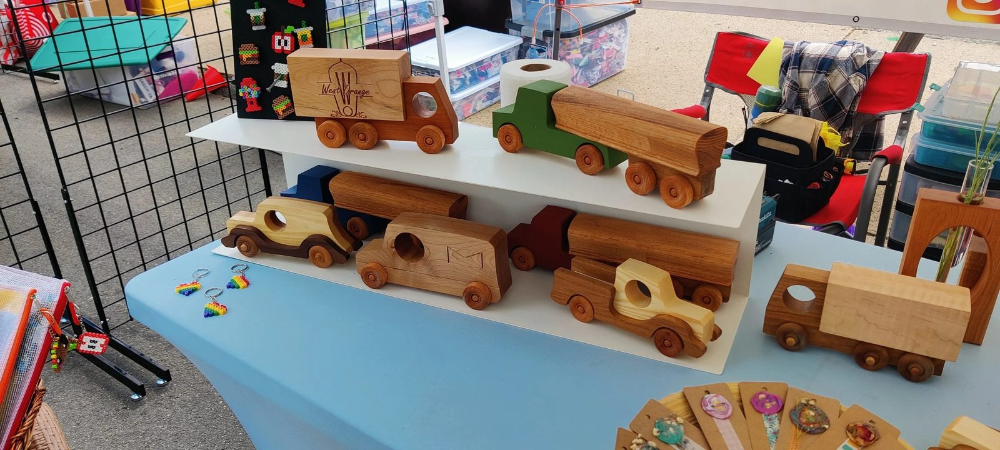
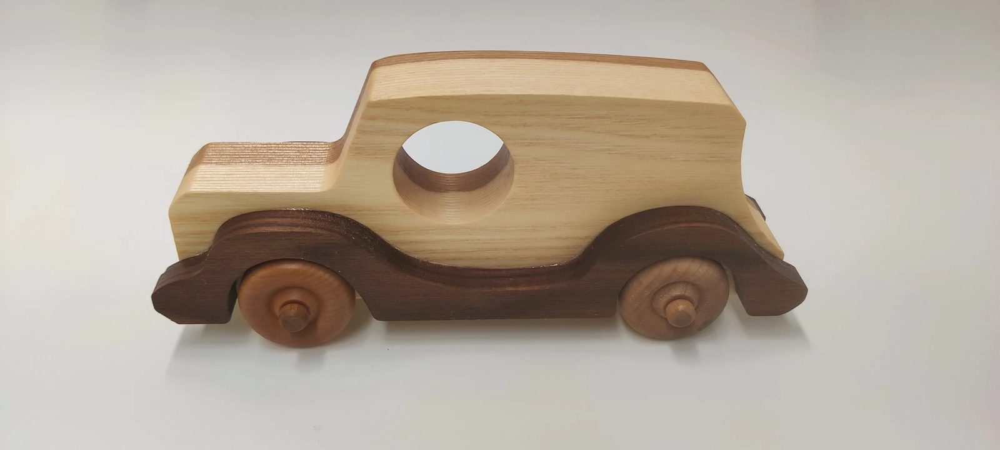
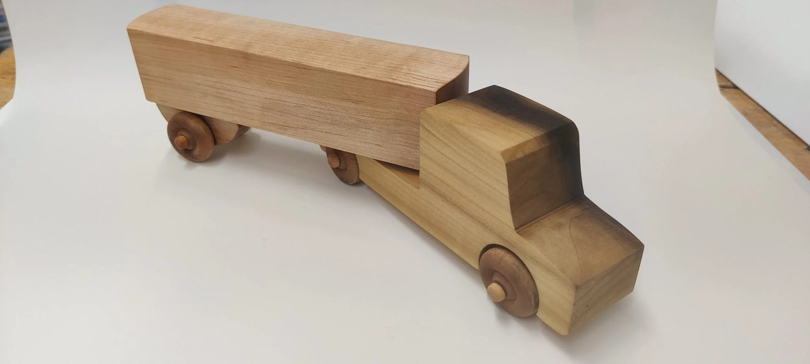
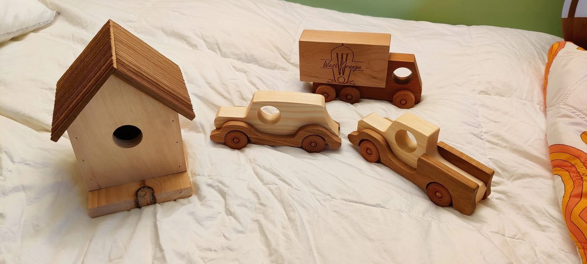
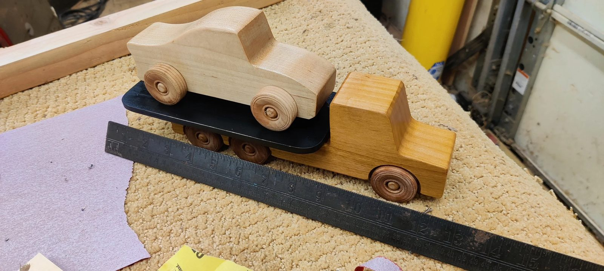
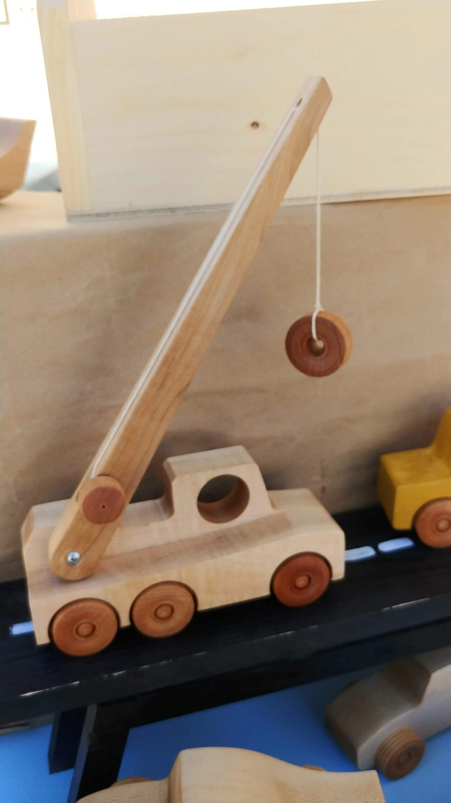
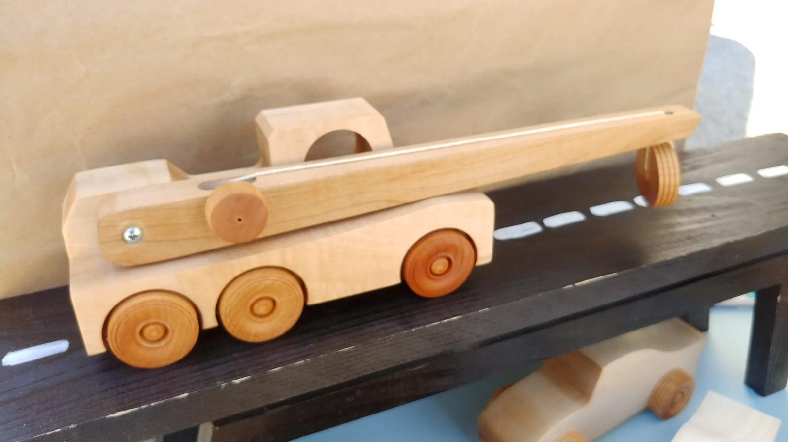
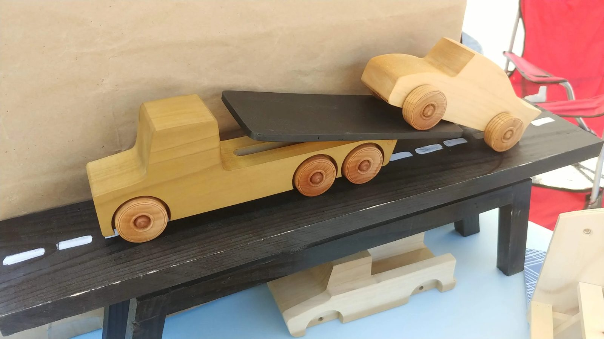
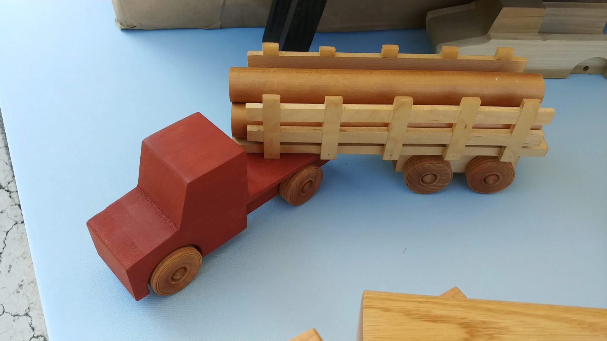
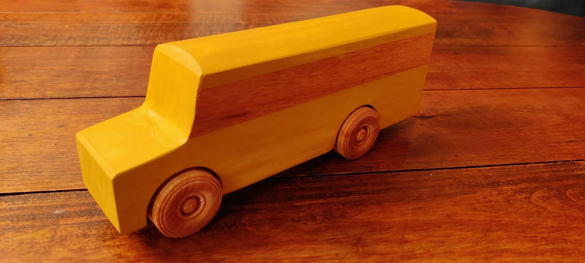
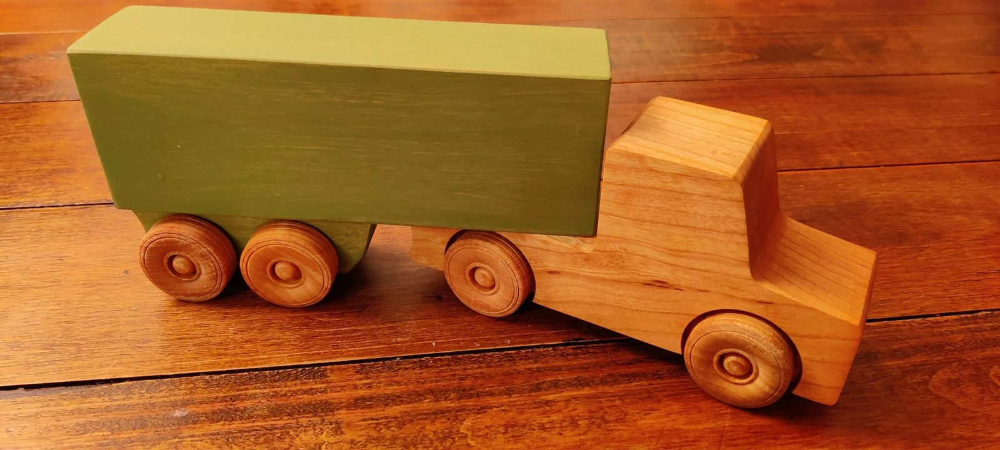
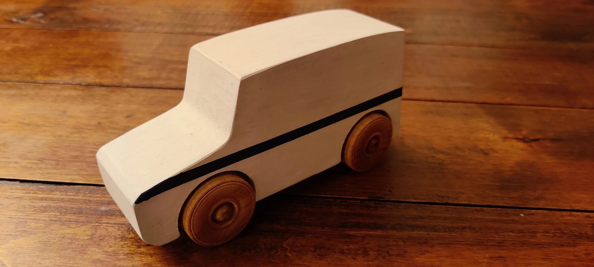
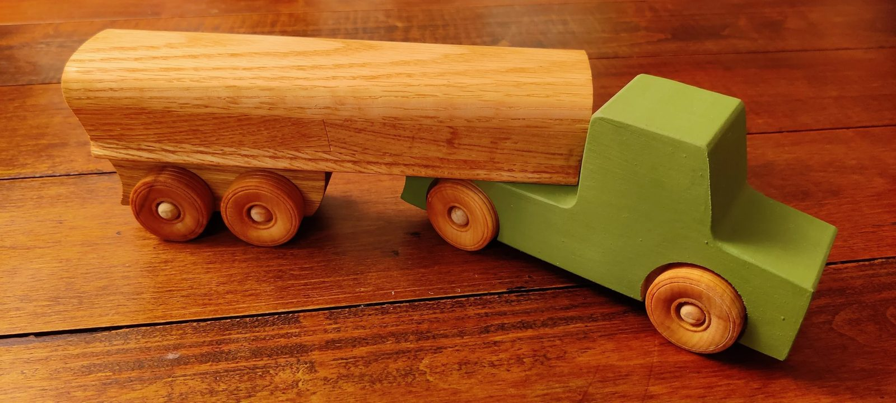
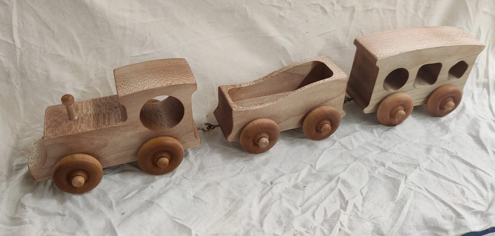
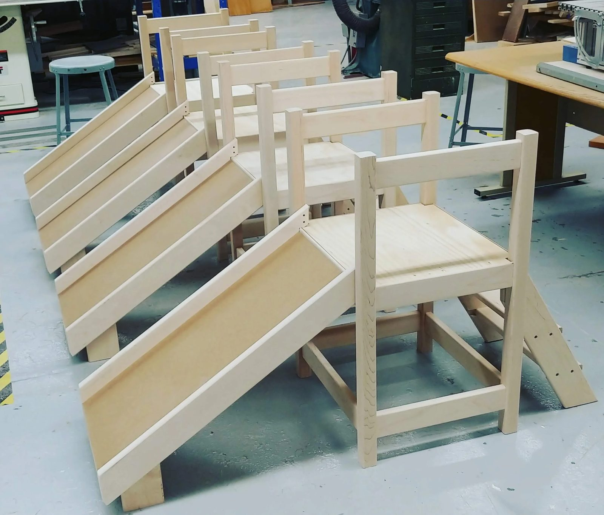
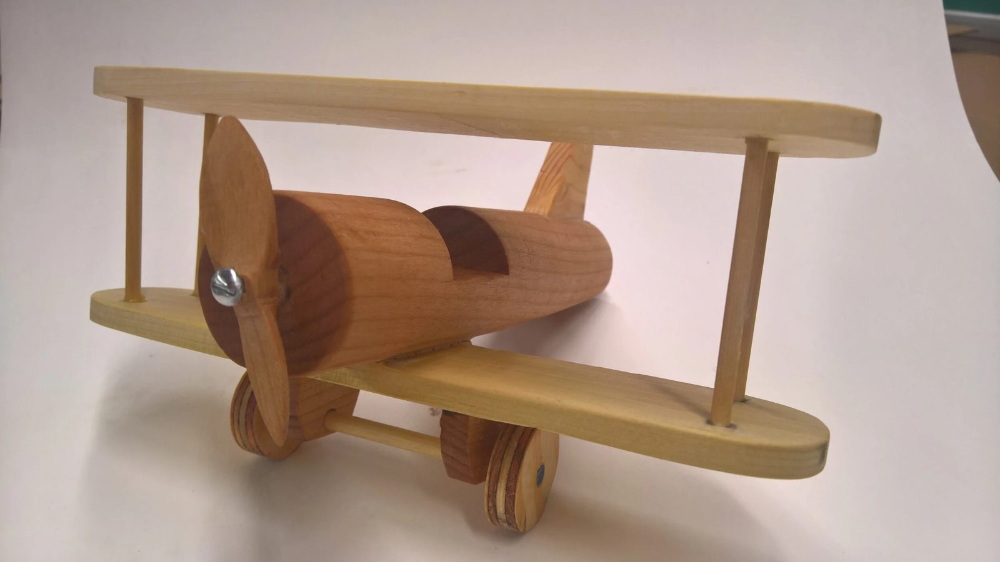
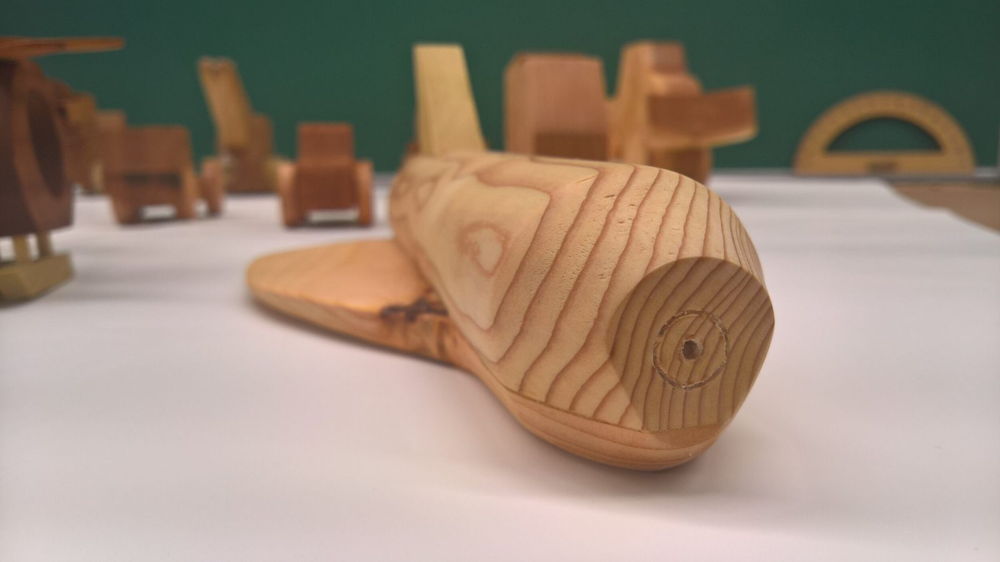
Ask about a custom toy or a fleet of them — or grab a build-it-yourself kit like the bird house, tool box or toy camera from the shop.